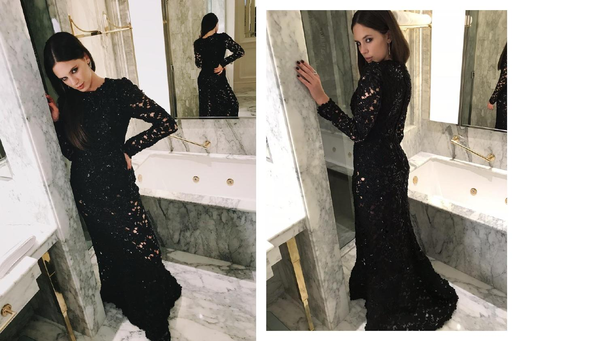
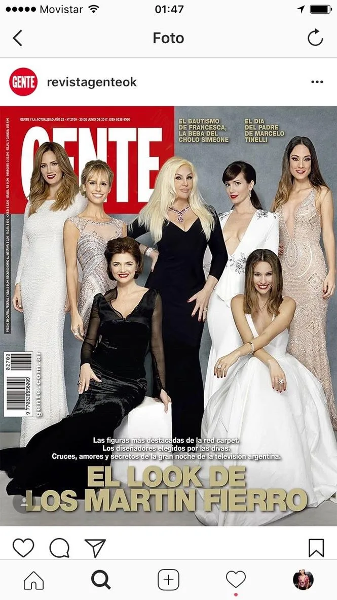

Red carpet con toda la presión del mundo. El contexto define las decisiones casi más que el look en sí.

La noche más larga del año de la moda local
El Martín Fierro es el momento en que todo el país mira a la industria del espectáculo argentino. Netflix llegó como nominado con una lista de actrices que representaban el nuevo cine nacional. El styling tenía que estar a la altura de ese momento.
Trabajamos con Delfi Chavez, una de las apuestas más fuertes de la plataforma para la temporada. El look tenía que decir algo sobre quién era ella, no sobre la plataforma.

Una sola decisión que lo cambia todo
El vestido de encaje negro que elegimos para Delfi fue una apuesta. No era el look más seguro, no era el más obvio para el Martín Fierro. Pero era el correcto para ella.
Cuando llegó al red carpet y las cámaras empezaron a seguirla, entendimos que habíamos acertado. Esa es la diferencia entre styling y costume.
Créditos